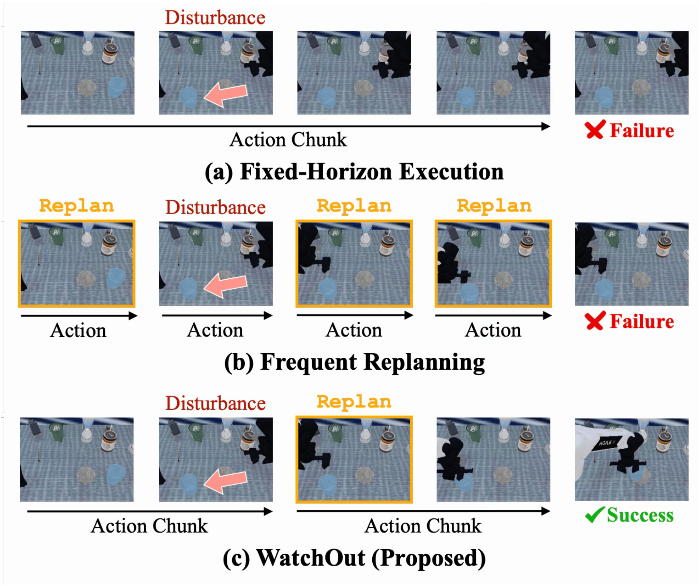
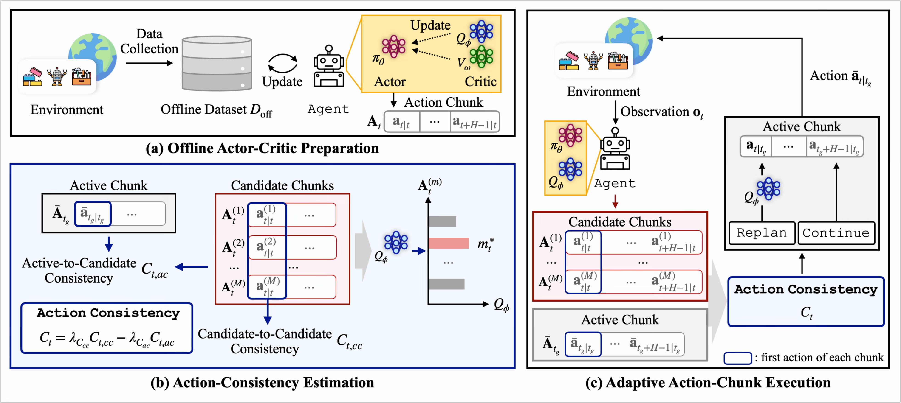
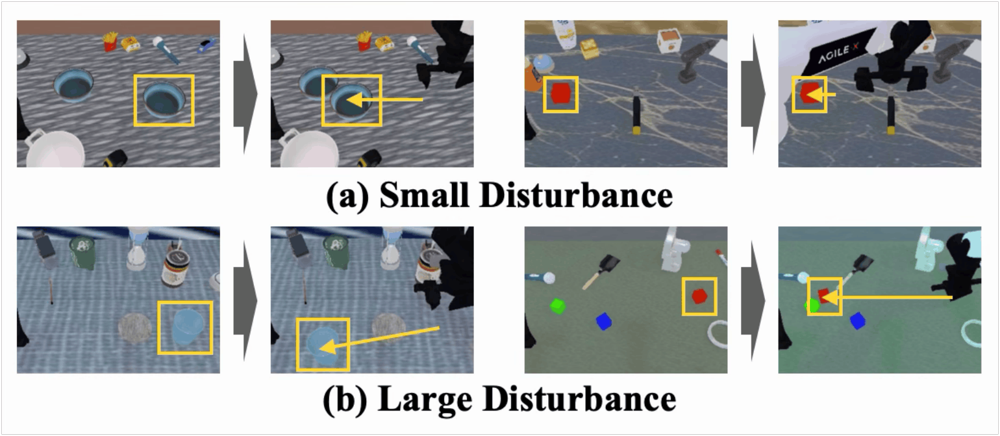
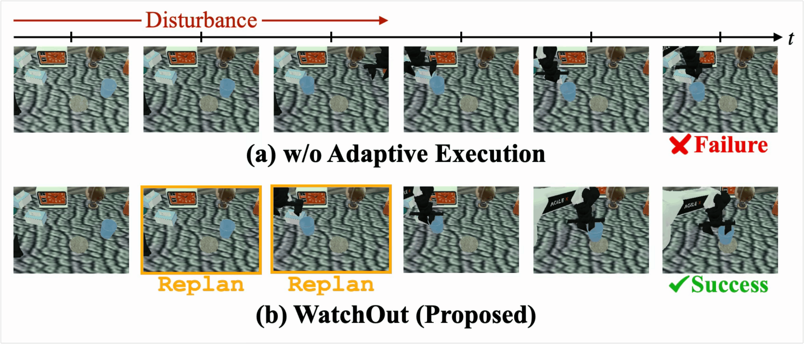
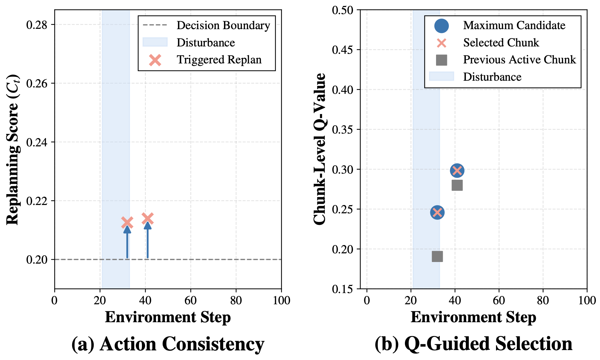

Not always continue. Not always replan.
Fixed-horizon execution can keep following an outdated chunk after the scene changes, while frequent replanning can repeatedly replace an otherwise coherent plan. WatchOut makes active-plan reassessment an explicit execution-time decision.

Does explicitly reassessing the active action chunk improve robustness to dynamic disturbances over existing action-chunk execution strategies?
Can active-to-candidate consistency together with candidate agreement provide an effective selective retain-or-replan signal?
Active-plan reassessment + value-guided replacement
The execution mechanism uses current policy predictions to test whether the scheduled action remains compatible with the latest observation, then invokes the chunk-level critic only when replacement is required.

Reassess the active chunk
Ask whether the action scheduled by the previously generated chunk is still compatible with actions predicted from the latest observation.
Use consensus-aware evidence
Combine active-to-candidate disagreement with candidate-to-candidate agreement so that replanning is supported across multiple stochastic predictions.
Decouple replacement
Consistency decides when to replan; the conservative chunk-level critic decides which candidate becomes the new active chunk.
Consistency-based replanning score
A low active-to-candidate consistency indicates deviation from the active action, while a high candidate-to-candidate consistency indicates that current predictions support a common alternative.
replan if Ct > δ; otherwise retain the active chunk
Value-guided replacement
Candidate valuation is deliberately downstream of the retain-or-replan decision.
Qϕ is the conservative chunk-level value estimate
Retain
Keep the remaining active chunk when it remains compatible.
Replan
Replace the chunk only when the score crosses the decision boundary.
Two VLA backbones, two manipulation benchmarks
WatchOut is evaluated under dynamic object-level disturbances using π0.5 and X-VLA on RoboTwin 2.0 and LIBERO-Long, with the same execution protocol used for all baselines.
RoboTwin 2.0
Long-horizon manipulation tasks with small and large object displacements introduced after an action chunk has been generated.
LIBERO-Long
Long-horizon language-conditioned manipulation tasks evaluated under the same retain-or-replan setting.

Selective replanning is visible in both behavior and value traces
The qualitative and trajectory-level analyses expose the two roles directly: action consistency determines the replanning event, and the chunk-level critic ranks replacement candidates after that event.


Interpretation: the page should emphasize selective plan reassessment rather than presenting WatchOut as another horizon-adaptation method. Quantitative claims should be synchronized with the final frozen result table.
Human-induced disturbances with SO-ARM101
A task-relevant object is physically displaced during action-chunk execution without resetting the episode, requiring an online retain-or-replan decision under real sensing, actuation, and interaction.
Replan when compatibility breaks
When the active action becomes incompatible with current predictions after a physical displacement, WatchOut triggers replanning and redirects execution toward the changed scene.
Retain when the plan remains valid
When the scheduled action remains compatible with the latest observation, WatchOut retains the active chunk and avoids unnecessary replacement.

Anonymous submission
This project page intentionally contains no author or affiliation information. De-anonymize only after the review process permits it.